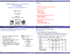

Download: from web
@Misc{Friendly06ssc2006,
author = {M. Friendly},
year = {2006},
month = {May},
title = {Andr\'e-Michel Guerry and the Rise of Moral Statistics},
howpublished = {Statistical Society of Canada},
note = {London, ONT},
url = {http://datavis.ca/papers/ssc2006-2x2.pdf},
}